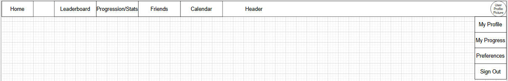

<script src="header/header.js"></script>
<link rel="stylesheet" href="./styles/proposal.css">
<main>
    <section>
        <h1>Productivity Manager</h1>
        <p>
            Proposed by <a href="/people/P2892889.html">Rhys Marsh</a> and <a href="/people/P2862490.html">Brandon Hextall</a>
        </p>
        <p>
            Our proposal is a gamified productivity manager designed to help users manage and complete their daily and weekly tasks. These tasks are viewable via a calendar.<br>
            Users can create, modify, and organise tasks by setting a start date, time and deadline, and objectives to be completed to achieve the task.<br>
            As tasks are completed, users earn XP to level-up their account, unlocking cosmetic rewards and allowing them to climb the global leaderboard.<br>
            The website also features customisable profiles, allowing users to showcase collectibles, add profile pictures, and add a bio.
        </p>
    </section>
    <section>
        <h2>Key Features</h2>
        <ul>
            <li>Task creation, modification, and deletion</li>
            <li>Time tracking functionality</li>
            <li>Profile pictures</li>
            <li>Login authentication</li>
            <li>Level-up rewards</li>
            <li>Leaderboards</li>
            <li>Preferences (optional)</li>
        </ul>
    </section>
    <section>
        <h2>Resources</h2>
        <ul>
            <li>Items/Collectibles list</li>
            <li>Pages: home, new task, task details, calendar, leaderboard, collectibles/ progression, preferences, login/register, header</li>
            <li>Database for users</li>
            <li>Database for profile pages</li>
            <li>Database for tasks</li>
        </ul>
    </section>
    <section>
        <h2>Pages</h2>
        <section>
            <h5>Home Page</h5>
            <p>This is the landing page for users who are logged in. Users who are not logged in will be redirected to the login/register page where they can create an account. The main site will not be accessible without logging in.</p>
            
        </section>
        <br>
        <section>
            <h5>New Task Page</h5>
            <p>This is where the user will create a new task. There are inputs for task name, start date, deadline, and objectives.</p>
            
        </section>
        <br>
        <section>
            <h5>Task Details Page</h5>
            <p>This is where the user can view a task's details when they click a task on their calendar. The system will load the details into the input fields and can be modified and deleted anytime by the user.</p>
            
        </section>
        <br>
        <section>
            <h5>Calendar Page</h5>
            <p>This is the calendar that displays the user's tasks. They will be able to change the calendar view to show the day, month, and year as well as being able to sift through the calendar to view upcoming or previous tasks.</p>
            
        </section>
        <br>
        <section>
            <h5>Leaderboard Page</h5>
            <p>Users will be able to view this leaderboard at any time. By default it will display the top 10/20 users globally, but they will be able to either scroll or click through the leaderboard to show more users. They will also be able to jump to their own position which will display their leaderboard position and the users around them. There may also be a filter to show a leaderboard between the user and their friends (if we add a friends feature)</p>
            
        </section>
        <br>
        <section>
            <h5>Collectibles/Progression Page</h5>
            <p>This page shows the user's level progress, the reward for their next level-up, and a table of collectibles where they will be able to sort/filter alphabetically and by locked/unlocked items.</p>
            
        </section>
        <br>
        <section>
            <h5>Preferences Page</h5>
            <p>This is an optional page that we may or may not add. It will contain simple options for the user to select such as light/dark mode, high-contrast mode, simple font, etc.</p>
            
        </section>
        <br>
        <section>
            <h5>Profile Page</h5>
            <p>This is the user's profile page. They will be directed to this page when they click the "my profile" button in the dropdown on their profile picture in the header. It is where they can modify their collectibles showcase, profile picture and bio. It will also be viewable by other users via search (if we add it as a feature)</p>
            
        </section>
        <br>
        <section>    
            <h5>Login/Register Page</h5>
            <p>This is where users will be directed if they are not logged in to the site. It will take an email address and a password, and will have basic email validation, and at least simple security measures to prevent malicious attacks like SQL injection. The login/register pages will be separated and will only be displayed when the user clicks the appropriate button.</p>
            <h6>Login Page</h6>
            
            <br><br>
            <h6>Register Page</h6>
            
        </section>
        <br>
        <section>
            <h5>Header</h5>
            <p>This is the header. It will be displayed on every page a logged-in user views. It will have buttons to direct users around the website.</p>
            
        </section>
    </section>
</main>
<script src="footer/footer.js"></script>